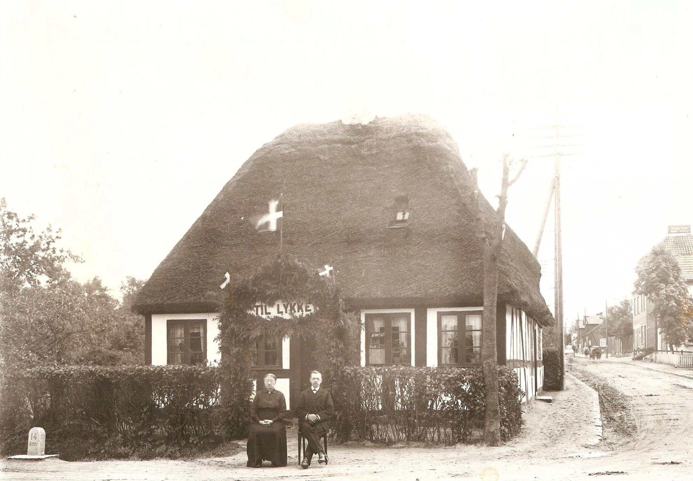

Langeskov
Byen har formentlig sit navn fra den lange skov, der strakte sig øst-vest. Kong Kristian den femte gav fra sit slot i København den 8. december 1679 kongeligt privilegium til Knud Urne Sifvertsen, Juelskov, til at drive kro. Kroen lå dengang på den plads, hvor nu Truelsholm ligger. Her var der tidligere eksercerplads, hørende under Nyborg slot. I årene før 1816 var der herredsting i tinghuset i Røjerup (Langeskov), deraf kommer navnet Tingvej. En del af tinghuset er stadig bevaret, men ikke i sit oprindelige udseende. Tinghuset ligger på Lærkevej 12, Langeskov.